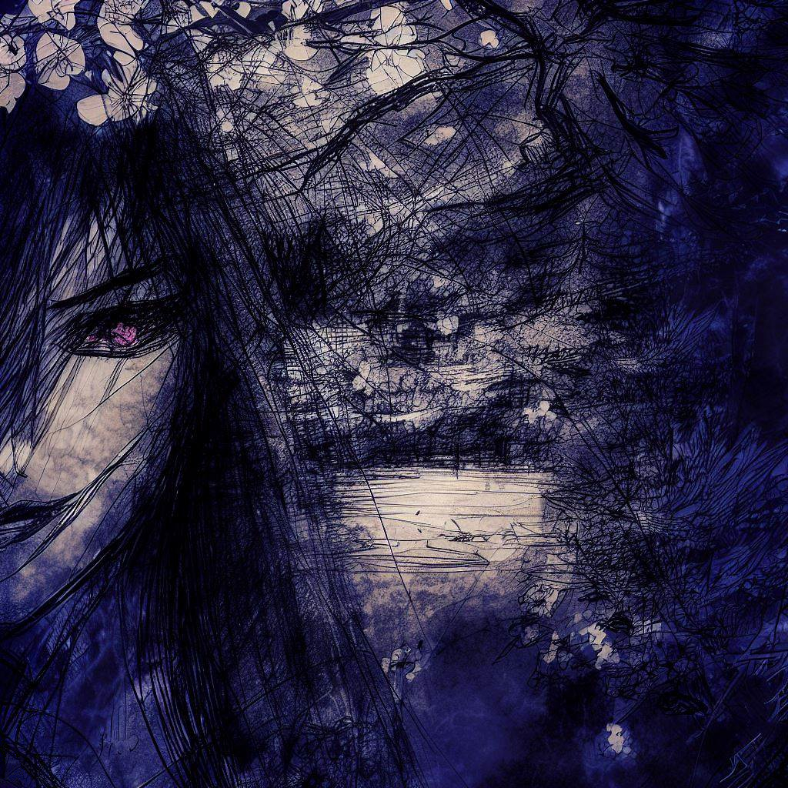
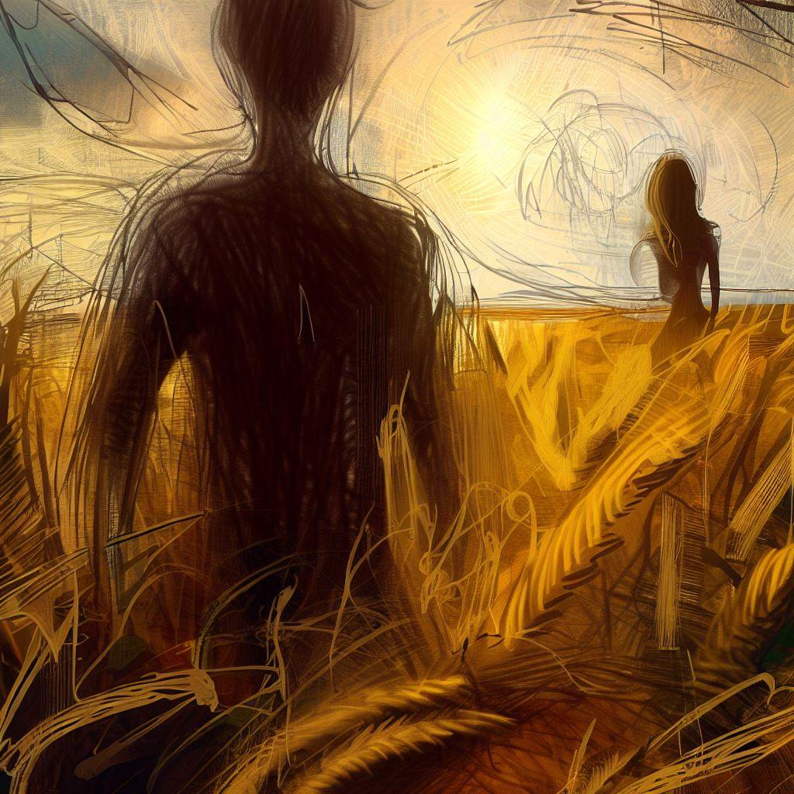
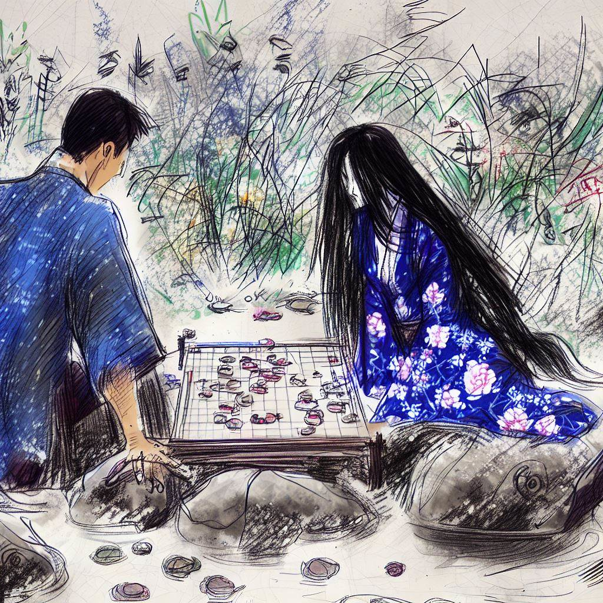

Entre l'abîme de la mort et la lumière de l'amour, nous dansons.
Introduction
Dans la région du Kansai, au Japon, une légende persistante raconte qu'à la lueur de la pleine lune, une figure envoûtante émerge, captivant les voyageurs perdus.
Sublime et énigmatique, Komayō charme les âmes errantes en leur offrant un semblant de félicité.
Avec une malice subtile, elle les invite à une partie de ōgi, un jeu complexe dérivé des échecs japonais traditionnels.
Envoûtés par sa présence et séduits par l'illusion d'un bonheur à portée de main, les infortunés s'engagent avec enthousiasme dans un labyrinthe de stratégies et de manœuvres.
Cependant, au fil du jeu, une lassitude insidieuse s'installe.
Le jugement des joueurs se trouble et ils plongent dans un sommeil profond et inébranlable.
C'est dans cet état de sommeil que Komayō montre son vrai visage.
Elle puise leur vitalité, laissant derrière elle une coquille vide, autrefois pleine de vigueur.
Leur âme, désormais transformée en yūrei, est condamnée à errer sans fin.
Hantées par l'aura irrésistible de Komayō et par l'illusion de finir leur partie de ōgi, ces âmes demeurent piégées, engagées dans une quête sans fin et un rêve brisé.
Le Jardin des Âmes Perdues
Au-delà des frontières de notre réalité tangible se trouve un monde d'une splendeur irréelle, un royaume où les rêves et les réalités s'entremêlent avec une grâce surnaturelle.
C'est dans cet espace intemporel que Komayō règne, déesse énigmatique d'un sanctuaire où le temps n'est qu'un murmure éphémère.
Les cerisiers de ce jardin mythique fleurissent sans cesse, libérant des pétales qui dansent dans l'air comme captivés par une magie invisible.
Les eaux des étangs, limpides et brillantes, reflètent un ciel d'un bleu pur et constant.
Des oiseaux aux plumages dorés chantent des mélodies qui semblent susciter une paix éternelle.
Chaque sentier mène à des merveilles inouïes, éveillant chez le visiteur un sentiment d'émerveillement enfantin.
Komayō, au centre de ce tableau vivant, est d'une beauté qui défie la compréhension.
Son regard, abyssal et mystérieux, est un puits de secrets anciens, et son sourire, subtil et captivant, semble inviter les cœurs les plus endurcis à se perdre dans les abysses de son univers.
Vêtue d'un kimono bleu nuit orné de motifs floraux et mythologiques, elle incarne une élégance intemporelle, chaque mouvement exsudant une grâce sans pareille.
Ce lieu, bien que magnifique, détient un secret redoutable.
Les âmes qui s'y aventurent sont éblouies, non seulement par sa splendeur, mais surtout par le charme irrésistible de Komayō.
Ces âmes, capturées par sa séduction, vivent dans une béatitude illusoire, ignorant qu'elles sont désormais liées à elle, prisonnières de son monde de rêves.
Komayō ne cherche pas la souffrance de ces âmes, mais leur adoration inébranlable, leur dévotion fervente.
C'est de cet amour, de cette vénération absolue, qu'elle tire sa force, affirmant ainsi sa domination sur ce domaine onirique.

En ce jour particulier, une tension subtile traverse l'air.
Komayō, dotée d'une intuition presque surnaturelle, perçoit l'approche d'une nouvelle âme, attirée par l'écho d'un amour éternel et d'une joie sans fin.
Se levant avec une fluidité qui masque une intention calculée, elle ajuste les plis de son kimono et dirige son regard magnétique vers l'horizon.
Ses yeux brillent d'une lueur d'anticipation.
Elle se tient prête à accueillir cet invité imprévu, à l'immerger doucement dans les méandres envoûtants de son royaume, une spirale d'où il pourrait ne jamais vouloir s'échapper.
Les Rêves Inachevés de Jun
Dans la réalité tangible de la vie quotidienne, vit Jun, un homme égaré dans les méandres de ses propres songes.
La nuit, il est hanté par un rêve récurrent, une vision éthérée qui l'attire irrésistiblement vers un monde qu'il ne peut atteindre.
Chaque nuit, le rêve commence de la même manière.
Jun se trouve dans un champ de blé doré, le soleil couchant teintant le ciel d'une palette de couleurs chaudes.
Le vent caresse les épis de blé, créant un océan ondulant de lumière et d'ombre.
Au loin, une silhouette féminine, insaisissable, court devant lui.
Elle est floue, comme une esquisse inachevée, mais il la reconnaît instantanément.
Son cœur bat plus fort à sa vue.

Il court derrière elle, traversant le champ, ses pieds à peine touchant le sol.
Elle semble toujours à quelques pas devant lui, un mirage dansant hors de portée.
Chaque fois qu'il pense l'avoir rattrapée, elle s'éloigne à nouveau, guidant Jun vers un portail mystérieux qui se profile à l'horizon.
Ce portail, sculpté dans un bois ancien et orné de symboles énigmatiques, est la frontière entre son monde et le sien.
Alors qu'il approche, la silhouette féminine le franchit, se retournant un instant pour lui lancer un regard empreint d'une mélancolie silencieuse.
Jun tend la main, désespéré de la rejoindre, mais à chaque fois, le portail se ferme avec un grondement sourd juste avant qu'il ne puisse le traverser.
Et à ce moment précis, il se réveille, son cœur battant la chamade, un sentiment de perte et de désir inassouvi l'étreignant.
L'Échiquier du Destin
Dans le quartier Hommachi de Ōsaka, où le moderne se mêle à l'histoire, Jun mène une existence monotone.
Employé dans une entreprise où l'âme semble absente, il se noie dans un océan d'ennui.
Sa vie sociale se limite à des collègues courtois mais distants, et ses rencontres amoureuses, bien que fréquentes, ne parviennent pas à combler le vide qui résonne en lui.
Le Parc Utsubo est son sanctuaire, un lieu de paix loin du chaos urbain.
Jun y trouve refuge parmi les rosiers, dont les histoires colorées et parfumées l'apaisent.
Il connaît chaque recoin de ce parc, chaque secret qu'il renferme.
Là, près de l'étang, où le soleil danse sur l'eau en semant des éclats dorés, il trouve un réconfort, un moment de sérénité dans sa vie par ailleurs terne.
Par une après-midi d'été, sous un soleil implacable, Jun se réfugie près de la fontaine du parc.
Le murmure de l'eau et la fraîcheur ambiante l'enveloppent d'un voile apaisant.
Assis sur un banc à l'ombre des pins, il se laisse bercer par la brise légère.
C'est alors qu'un détail insolite capte son attention.
Sur une pierre sculptée, évoquant un échiquier, repose un jeu de ōgi.
Les pièces, anciennes et finement ouvragées, portent des motifs qui lui rappellent étrangement le kimono de la femme de ses rêves.
Les dragons et les fleurs gravés sur les pièces semblent presque animés, invitant Jun à les effleurer.
Poussé par une curiosité inexplicable, Jun murmure, Étrange..., et étend sa main vers les pièces.
L'instant où sa peau effleure le bois sculpté, une sensation étrange l'envahit.
C'est comme s'il venait de toucher un morceau d'un autre monde, une connexion tangible avec quelque chose de lointain et de mystérieux.
L'atmosphère autour de lui se modifie.
Une brise soudaine soulève les pétales des roses, et l'étang scintille d'une lumière irréelle.
Jun, les yeux fixés sur le jeu, sent son cœur battre à tout rompre.
Il y a quelque chose de magique, d'indescriptible dans cet instant.
Jun était incertain sur ce qui l'avait poussé à effleurer la pièce du jeu de ōgi.
Était-ce une simple curiosité, un besoin de distraction ou bien un élan mystérieux, comme si la pièce elle-même l'avait appelé ?
Soudain, une voix suave, écho lointain du chant des criquets, résonna derrière lui :
Êtes-vous perdu ?
Il se retourna et vit émerger de l'ombre une femme sublime, drapée dans un kimono bleu nuit.
Sa chevelure noire, lisse et brillante, tombait en cascade sur ses épaules, tandis que le bruissement de son kimono évoquait une mélodie lointaine.
Son visage, fin et expressif, était orné de lèvres rouges sang, et son sourire envoûtant révélait une présence à la fois princière et prédatrice, mêlant grâce et mystère.
Une fragrance enivrante émanait d'elle, subjuguant Jun.
Hypnotisé par son regard profond, Jun répondit d'une voix tremblante :
Je... Je ne suis pas sûr.
Chaque mouvement de la femme était un tableau de grâce.
Elle le scrutait, semblant lire dans son âme.
Que cherchez-vous vraiment, Jun ? Est-ce uniquement ce jeu ou peut-être... quelque chose de bien plus profond ?
Jun, fixant le pion qu'il tenait, prit une légère inspiration avant de murmurer :
J'ignorais que je vous cherchais... jusqu'à ce moment.
Elle inclina la tête, ses cheveux noirs glissant sur son épaule, et laissa échapper un rire doux mais chargé d'énigmes.
Et maintenant que vous m'avez trouvée, que comptez-vous faire ? demanda-t-elle, un sourire séduisant et inquiétant jouant sur ses lèvres.
Jun, ressentant la légère caresse de ses doigts sur sa main, la regarda intensément.
Après un moment suspendu, il déclara :
J'aimerais vous inviter à jouer avec moi.
Elle parut surprise, ses yeux confiants devenant plus doux, vulnérables.
Personne ne m'a jamais invité à jouer ainsi, murmura-t-elle, un soupir mélancolique s'échappant de ses lèvres.
C'est audacieux, Jun.
Son sourire se fit plus timide, révélant brièvement une facette cachée, tandis qu'une lueur malicieuse dans son regard suggérait que tout ceci n'était peut-être qu'une autre étape de son jeu.

L'Envoûtement
Assis en face de la belle inconnue, sur un rocher lissé par les années, Jun était totalement captivé.
Ce n'était pas tant le jeu de ōgi qui l'absorbait, mais plutôt la présence envoûtante de la femme en face de lui.
Chaque geste qu'elle faisait, chaque regard échangé, tissait un lien de plus en plus fort entre eux.
À chaque pièce qu'il déplaçait, à chaque stratégie qu'il élaborait, il se sentait irrésistiblement attiré vers elle.
Cette femme, d'une beauté hypnotisante, semblait pleinement consciente de l'influence qu'elle exerçait sur Jun.
Chaque mouvement de ses doigts effleurant les pièces du jeu était un acte de séduction.
Ses lèvres, rouge vif, s'entrouvraient parfois pour murmurer des commentaires sur le jeu, mais Jun ne l'écoutait qu'à moitié.
Pour lui, ce n'était pas la partie qui importait, mais la magie de leur interaction.
Le jeu devenait une danse entre eux, Jun se laissant emporter par la mélodie de ses rires et de ses chuchotements.
Elle jouait non seulement avec les pièces du ōgi, mais également avec les sentiments de Jun, éveillant en lui des émotions qu'il n'avait jamais connues.
À un moment, Jun, débordant d'émotion, osa plonger son regard dans le sien, cherchant une confirmation de ce qu'il ressentait.
Elle leva les yeux vers lui, ses yeux profonds captivant les siens.
Vous jouez bien, dit-elle doucement, sa voix ayant une qualité mélodieuse, presque hypnotique.
Jun répondit avec un sourire timide, C'est grâce à vous. Vous me guidez.
Elle se pencha légèrement en avant, un éclat malicieux dans le regard.
Est-ce vraiment le jeu que vous jouez, Jun, ou est-ce quelque chose de plus ?
Avec son cœur battant à tout rompre, Jun murmura, Je joue pour le plaisir de partager ce moment avec vous.
Le parc semblait suspendu dans le temps, dans l'attente de sa réponse.
Elle sourit doucement, ses yeux reflétant une profondeur et une compréhension que Jun n'avait jamais expérimentées.
L'Interstice entre Rêve et Réalité
Les secondes dans le parc semblaient suspendues, chaque mouvement dans leur partie de ōgi accentuant l'irréalité de l'instant.
Jun, submergé par un sentiment d'éveil dans un rêve, confia :
J'ai l'impression d'être dans un rêve éveillé, son regard captivé par la femme mystérieuse en face de lui.
Chacun de ses gestes, la délicatesse de ses mouvements, la courbe douce de ses lèvres, tout en elle semblait tissé d'enchantement.
Elle se pencha vers lui, ses cheveux glissant doucement contre sa peau, son visage se rapprochant si près qu'il pouvait ressentir la chaleur de son souffle.
D'une voix empreinte de douceur, elle lui murmura :
Et que se passera-t-il lorsque tu te réveilleras ?
Jun, les yeux brillants d'une émotion intense, luttait pour trouver les mots justes.
L'éclat mystérieux dans ses yeux le captivait.
Ne seriez-vous pas la femme de mes rêves, celle que j'ai toujours cherchée ? demanda-t-il, hypnotisé par le mouvement de ses lèvres formant un demi-sourire intrigant.
Mais qui êtes-vous, réellement ?
Avec une douceur mélodique, elle répondit :
Je m'appelle Komayō.
Son regard était empreint d'une tendresse envoûtante.
Elle caressa le plateau de jeu, ses doigts effleurant les pièces avec une affection presque tangible.
Ce que tu ressens n'est pas un simple rêve, dit-elle d'une voix suave.
C'est un lieu que j'ai créé, un jardin secret à la frontière de ton rêve et de la réalité.
Les mots de Komayō enveloppèrent Jun d'une sensation vertigineuse mêlée d'affection.
Il prit doucement sa main, cherchant dans ce contact une ancre dans le tourbillon de ses sentiments.
Quoi qu'il en soit, murmura-t-il, sa voix chargée de passion contenue, je ne veux pas vous perdre.
Le Pacte Éthéré
Les mots tendres de Jun flottaient encore dans l'air lorsque le regard de Komayō s'assombrit.
Ses yeux, d'une profondeur abyssale, capturèrent Jun dans un tourbillon de mystère et de mélancolie.
Elle détourna lentement son regard, ses longs cils projetant des ombres délicates sur ses joues rosées.
Notre rencontre, commença-t-elle d'une voix teintée de tristesse, bien qu'enchantée, est vouée à n'être qu'éphémère.
Ses mots étaient comme des étoiles filantes, brillant d'un éclat fugace dans l'obscurité de son expression.
Une pointe de regret se dessinait sur ses lèvres, chaque syllabe et chaque mouvement exprimant une émotion complexe et profonde.
Jun ressentit une lourdeur oppressante dans son cœur, comme s'il portait le fardeau d'un orage lointain.
Il fixait Komayō, cherchant en vain une étincelle d'espoir dans ses yeux énigmatiques.
Pourquoi ?, murmura-t-il, l'âme en peine face à cette réalité cruelle.
Avec une grâce naturelle, Komayō toucha le plateau de ōgi, ses doigts effleurant les pièces comme pour souligner ses paroles.
Il y a des forces qui dépassent nos simples désirs, dit-elle, sa main remontant le long de son cou, s'attardant là où battait son cœur.
Son geste était à la fois sensuel et poignant, une invitation à comprendre l'incompréhensible.
Jun, captivé, buvait ses paroles, attiré par elle comme par une flamme envoûtante.
Il était prêt à se brûler les ailes pour toucher à cette lumière mystérieuse.
Devant la détresse palpable de Jun, Komayō esquissa un sourire doux-amer.
Il pourrait y avoir un moyen, commença-t-elle, sa main glissant délicatement sur le plateau de ōgi.
Si tu remportes cette partie, je pourrais peut-être trouver un chemin pour te rejoindre dans ton monde. Mais si tu perds...,
sa voix s'éteignit, son regard intense se fixant dans celui de Jun,
alors tu devras me suivre, dans un lieu où le temps et l'espace se fondent dans l'infini.
Jun respira profondément, plongeant son regard dans celui de Komayō, une lueur de détermination dans les yeux.
Ce que je désire par-dessus tout, dit-il d'une voix empreinte d'une poésie sincère,
c'est de partager mon existence avec vous, quel que soit le monde où cela nous mènera.
Le Crépuscule d'une Âme
Dans l'air du crépuscule, une ambiance de bonne humeur et de joie enveloppait Jun et Komayō.
Ils jouaient depuis un moment, et la partie de ōgi était sur le point de se conclure.
La lumière du soleil couchant jetait des reflets dorés sur le plateau de jeu, créant une atmosphère presque irréelle.
Jun commença à se sentir fatigué, ses yeux clignotant fréquemment sous le poids de la somnolence.
Il bâilla discrètement, se frottant les yeux pour chasser la fatigue.
Tu as sommeil ? demanda Komayō, sa voix douce trahissant une pointe d'inquiétude.
Un peu. Je devrais peut-être me reposer, répondit Jun, essayant de masquer son épuisement.
Komayō lui offrit un sourire rassurant.
Oh, pas tout de suite, nous nous amusons tellement. La partie est presque finie, insista-t-elle, ses yeux pétillant d'une lueur malicieuse.
Jun sentit sa fatigue s'intensifier, ses paupières devenant plus lourdes à chaque instant.
Dans un effort pour rester éveillé, il regarda Komayō et dit d'une voix légèrement éraillée par la fatigue :
Tu joues incroyablement bien, ma chère.
Souriant devant cette appellation affectueuse et un peu maladroite, Komayō répondit :
Merci, Jun. Tu n'es pas mal non plus dans ce jeu.
Jun sourit, la fatigue et la joie se mêlant dans son expression.
Il ferma les yeux un instant, cherchant un répit dans l'obscurité derrière ses paupières.
Lorsqu'il les rouvrit, il remarqua que Komayō s'était rapprochée, son visage à quelques centimètres du sien.
Avec une douceur presque irréelle, Komayō se pencha vers lui.
Ses lèvres rencontrèrent celles de Jun dans un baiser tendre, un geste à la fois audacieux et plein de douceur.
Jun, surpris par ce contact inattendu, ne put s'empêcher de répondre à son baiser.
Lui rendant son affection, il entoura doucement ses bras autour d'elle, se laissant emporter par un élan de passion qui submergeait toutes ses autres pensées.
Leur baiser s'étira dans le temps, un moment suspendu qui semblait à la fois éphémère et éternel.
Dans l'étreinte de Komayō, Jun se sentit enveloppé d'une chaleur réconfortante, un havre au milieu des tourments de son cœur et de son esprit.
Son corps, épuisé par le poids de la fatigue et l'intensité de l'émotion, commença à céder au sommeil.
Dans les bras de Komayō, Jun s'endormit paisiblement, son dernier souffle conscient empreint du parfum de leurs sentiments partagés.
Alors qu'il glissait dans un sommeil profond, un sommeil dont il ne se réveillerait jamais, il se sentait en sécurité et aimé, emportant avec lui la promesse d'un avenir qu'il n'explorerait pas.
Avec un sourire empreint de mélancolie, Komayō observa un instant Jun, paisiblement endormi.
Elle le déposa avec précaution sur l'herbe tendre, veillant à son confort.
Se redressant, elle contempla le plateau de ōgi, théâtre de leur joute intellectuelle.
Les pièces, immobiles, racontaient silencieusement l'issue de leur partie - sa victoire douce-amère sur Jun.
Autour d'eux, le jardin, témoin muet de leur rencontre, commença à échoir au même destin que Jun.
Les fleurs perdirent leur vivacité, se fanant lentement, tandis que l'étang, autrefois miroitant, s'obscurcissait sous le poids d'un chagrin voilé.
Le portail, par lequel Jun avait franchi le seuil de ce monde onirique, se refermait graduellement, scellant le jardin et son nouveau résident dans une réalité suspendue.
Ce lieu, jadis un écrin de beauté et de vie, devenait le gardien silencieux de Jun, figé dans un rêve éternel.
Komayō, son regard s'attardant sur les changements subtils du paysage, demeura immobile, absorbée dans ses pensées.
Après un dernier regard vers Jun, elle tourna les talons, se fondant dans l'ombre naissante de l'aube.
Elle laissait derrière elle un monde qui avait perdu son éclat, une symphonie de souvenirs figés dans le temps, où l'amour et la mélancolie se côtoient dans un équilibre éphémère.